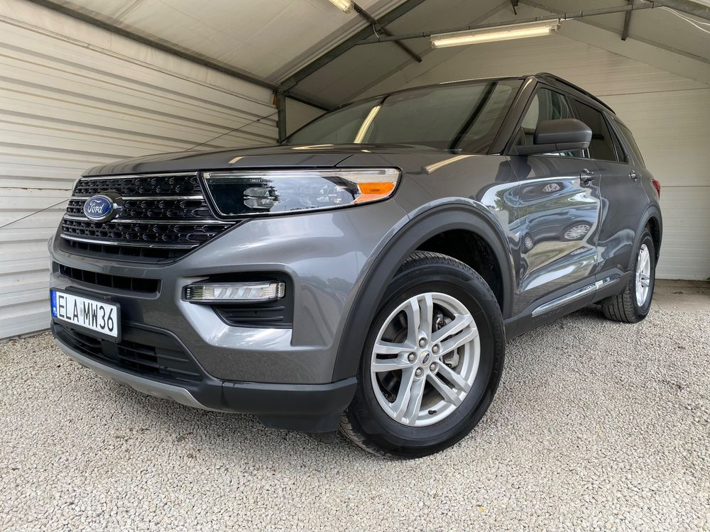
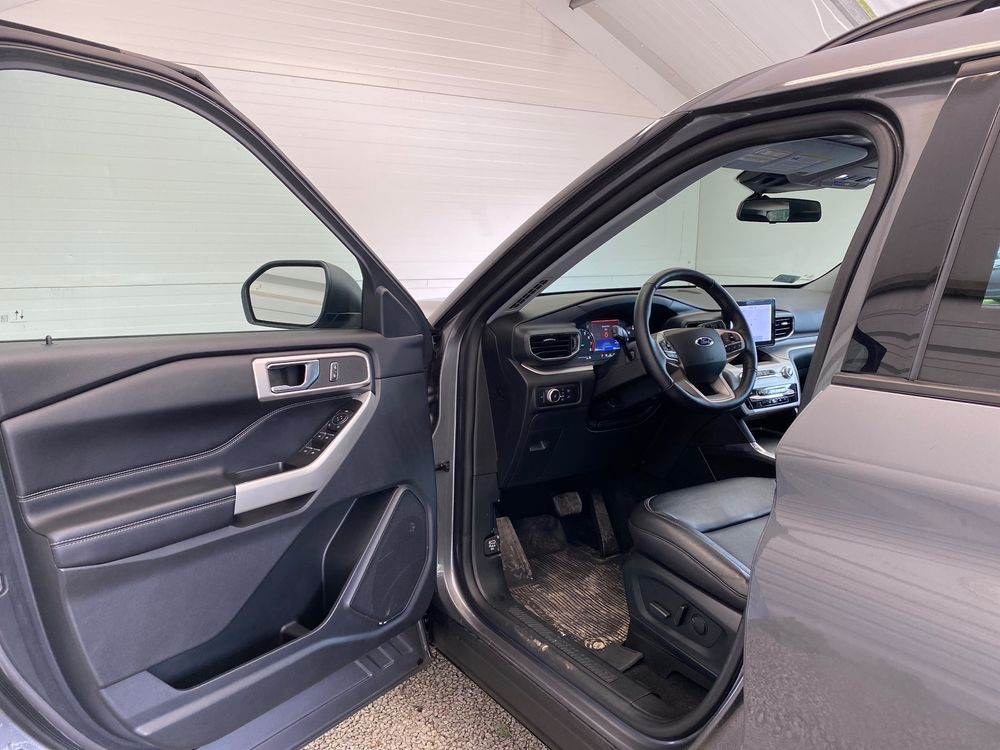
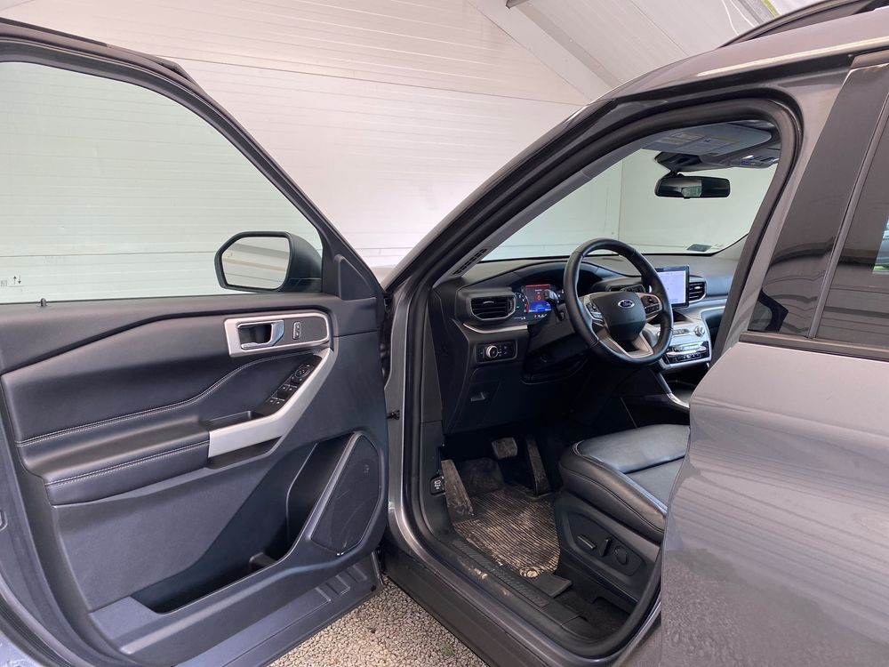
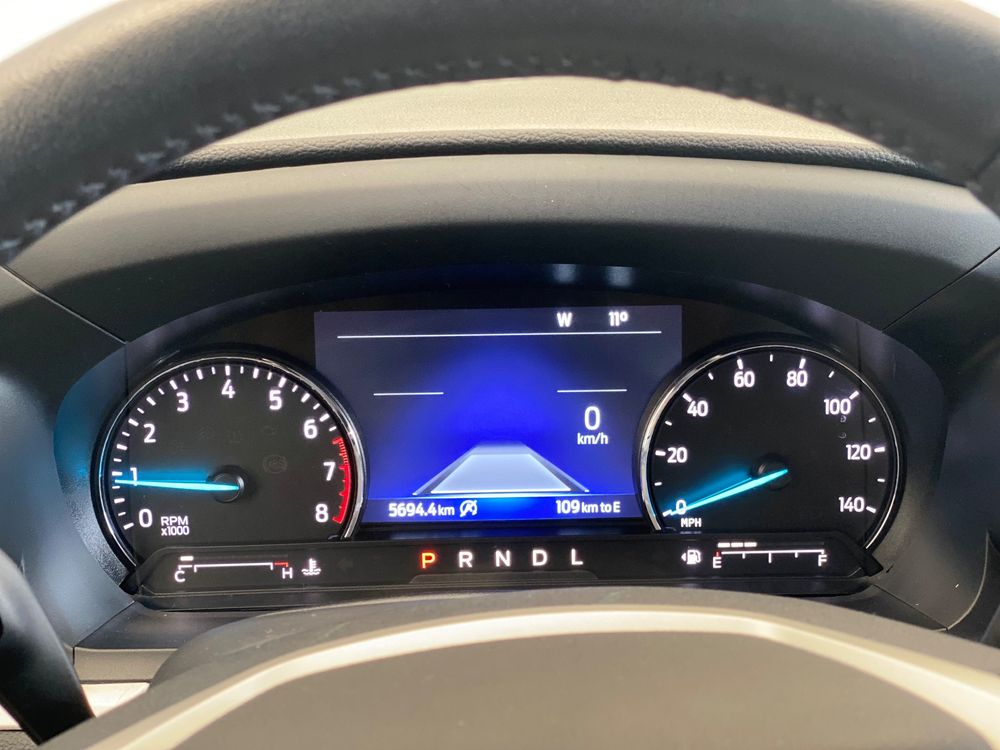
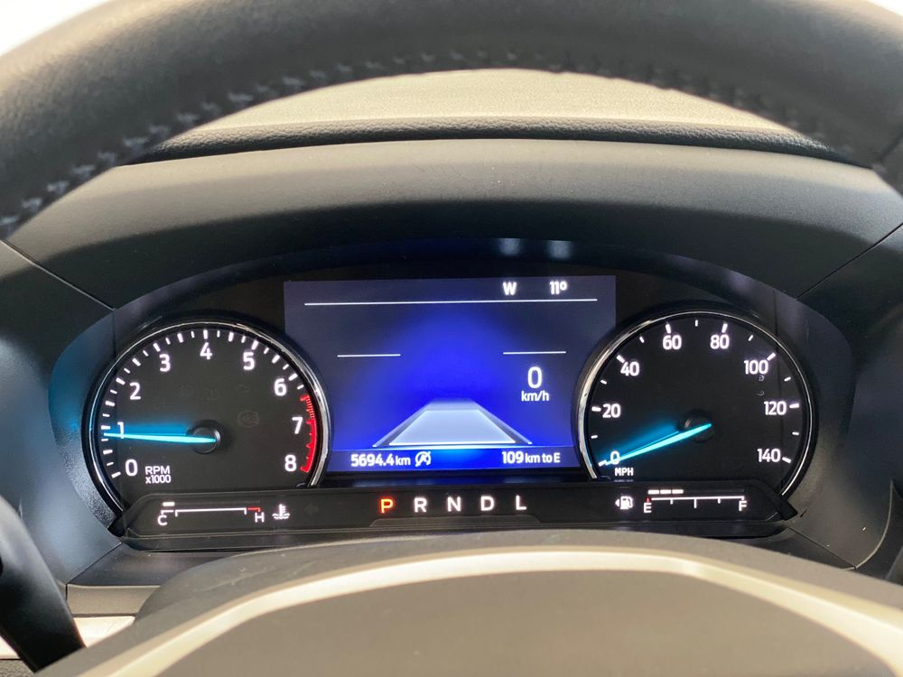

Witam, w ofercie pojazdów Auto Komis OSTROWEK1 prezentujemy Państwu: FORD EXPLORER ROK PRODUKCJI : 2020 2.3T BENZYNA 300Ps PRZEBIEG 5.000km AUTOMATYCZNA SKRZYNIA BIEGÓW ✔ SAMOCHÓD WSTAWIONY DO NASZEGO KOMISU PRZEZ PRYWATNEGO WŁAŚCICIELA ✔ ZAREJESTROWANY W KRAJU Z WAŻNYMI OPŁATAMI !!! KUP AUTO Z PEWNĄ HISTORIĄ !!! KUP AUTO Z GWARANCJĄ NA 12 MIESIĘCY KOSZT TO TYLKO 1200ZŁ. Auto bardzo zadbane. Wszystkie wymiany robione na bieżąco, technicznie 100% sprawny egzemplarz. Zawieszenie w bardzo dobrym stanie. Nie słychać żadnego pukania, stukania auto prowadzi się precyzyjnie. Silnik i skrzynia biegów wszystko pracuje znakomicie bez najmniejszych zastrzeżeń. Przebieg 5.000km jest w 100% oryginalny i wpisujemy na fakturze! Do auta dostaną Państwo komplet niezbędnych dokumentów. Jest to naprawdę fajny, nie wymęczony egzemplarz, który powinien jeszcze długo posłużyć nowemu właścicielowi. Gorąco polecam, zapraszamy do oględzin i zakupu. Myślę że kto pierwszy zobaczy ten samochód wróci nim do domu. ➠ NA AUTO WYSTAWIAMY FAKTURA MARŻA, KUPUJĄCY ZWOLNIONY Z PCC 2% Serdecznie zapraszamy na jazdę próbną !! !!! KUP AUTO Z PEWNĄ HISTORIĄ !!! ✔ Polub nas na facebooku! ➠ https://www.facebook.com/komiswosiu CO ZE STARYM AUTEM? MOŻLIWA ZAMIANA-ZOSTAW NAM SWÓJ SAMOCHÓD W ROZLICZENIU ➠ Przyjmujemy pojazdy w rozliczeniu. !!! ➠ Przyjmujemy pojazdy w rozliczeniu. !!! ➠ Skupujemy pojazdy za gotówkę. !!! ➠ Skupujemy pojazdy za gotówkę. !!! Dla zainteresowanych podam nr VIN. Zgadzam się na sprawdzenie auta w autoryzowanym serwisie lub na wybranej stacji diagnostycznej na terenie Zduńskiej Woli. W ciągłej ofercie posiadamy około 100 samochodów sprowadzonych z terenu Unii Europejskiej. Każde auto przed zakupem jest starannie sprawdzane, legalność pochodzenia, stan techniczny, historia serwisowa. Wpisujemy przebieg na fakturze. Na życzenie klienta możliwość wjechania na kanał jak również sprawdzenia czujnikiem lakieru. Posiadamy przeszło 15-letnie doświadczenie w handlu samochodami sprowadzanymi przez nas z zagranicy, głównie z Niemiec. Naszą najlepszą reklamą są zadowoleni klienci. To oni do nas wracają i przyprowadzają kolejne osoby. Zawsze dbamy o satysfakcję naszych klientów i zapewniamy im pełne bezpieczeństwo transakcji. Kupując od nas samochód klienci mają pewność, że pochodzenie auta zostało gruntownie sprawdzone i udokumentowane, a jego stan techniczny jest zgodny z deklaracją sprzedawcy. Załatwiamy wszelkie formalności, pozostaje Urząd Komunikacji - nie trzeba iść już do Urzędu Skarbowego i opłacać 2% podatku, ponieważ wystawiamy Fakturę VAT marża. FINANSOWANIE Możliwość zakupu na kredyt lub leasing Gwarancja najniższej raty!!! Procedura uproszczona - oświadczenie - akceptujemy różne źródła dochodu 0% wkładu własnego Finansowanie zarówno dla osób prywatnych, jak i dla firm Minimum formalności i szybki proces - kredyt podczas jednej wizyty! Zapytaj o szczegóły kredytu tel. .ooa-j3iomg{background-color:transparent;border:none;color:#0071CE;cursor:pointer;font-size:16px;padding:0;white-space:break-spaces;}Wyświetl numer Powyższe opisy samochodów nie stanowią w rozumieniu prawa oferty handlowej, są jedynie treścią informacyjną w myśl art. 66, § 1. Kodeksu Cywilnego. Sprzedający nie odpowiada za ewentualne błędy lub nieaktualności ogłoszeń. KONTAKT : ☎ KOMIS: Wyświetl numer komisostrowek.pl Auto Komis Ostrówek1 stara droga 12 trasa Zduńska Wola -Łask Ostrowek 1 Zduńska wola . pow. zduńskowolski woj. łodzkie 5min. od węzła drogi S8 Zduńska Wola Wschód. 51.591212 19.011696


 



 
